

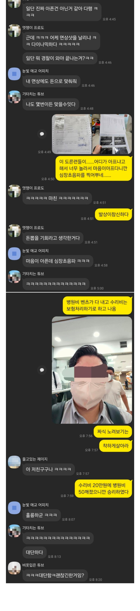

Chinese never win



Chinese never win
져도 병신이고 이겨도 병신이면 승리한 병신이 되어라
이게마따
동남아식으로 직접 저런거 해결하다간 사업하는 친구들은 훅 간다
너 납치된거야
저런건 세게 나가야함 치안 어쩌구 하면서 호구 당하라는 놈들 때문에 한국인이 해외에서 호갱 타겟이 되는거임
대부분의 나라는 저런일 생기면 존나 싸우려드는데 한국인 일본인들은 싸움 피하고 돈줘버리니깐 소문나서 사기꾼이고 범죄자고 다 노림
흠..
사진이 실제 사고 현장임? 개박살난거 같은데 수리비 20만원?
아닌듯 그냥 퍼온짤같음
에? 쫌 ㅂㅅ같은데..
응급실 가서 욕먹고 스트레스 겁나게 받아서 갑자기 심장이 아프다 하면 어디 응급실이던 심장초음파,심전도,혈액검사는 맞긴함..
꼭 도른자는 아님... 다만 이에대한 설명이 미흡하면 도른자로 여길 수는 충분히 있음
실제로 스트레스 유발 심근염 (Stress-induced cardiomyopathy ; Takotsubo Cardiomyopathy) 이라는 스트레스 유발 심질환이 있다.. 증상도 그렇고, 심전도 찍고 피검사 해보면 급성 심근경색이랑 똑같아서 구별하기 어려운 경우도 많음ㅋㅋ
치료는 뭐 보존적으로 해결되지만. 피검사,심전도가 ㅈ창났는데 초음파안해보면 구별이 안간다는 점이 감별포인트
그 돈을 저 떼놈이 내줬다면 이참에 심장 평가도 싹 됐으니 너무 좋고~
그런거구만 ㅋㅋㅋㅋㅋ
심장이나 뇌쪽은 위치가 위치라 일단 환자가 이상하다 하면 검사 하는가 보구나
맞아연. 환자말만 듣고 괜찮겠네 집에가요~했다가 억하고 쓰러지면 짱꺠 벤츠 수리비가 문제가아님ㅋㅋ
댓글의 심근염 --> 심근병증 으로 정정함돠.. 둘이 엄연히 다른건데 헤까닥해서 잘못 썻음..
그래서 과실 비율이 어케 되는데
뭐야 기사가 긁은거야?
사람 사는거 진짜 다 거기서 거기구나...위 아더 월드...
차오니마
음...그래 이겼다니 다행인데
치안안좋은데서 너무 왁왁 하다가 문제생길일 없이 안전히 다녔으면 조켓다